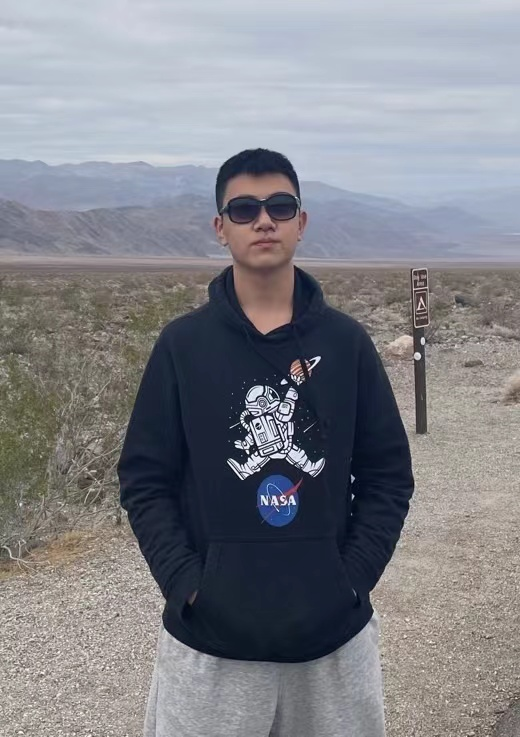

|
Ph.D. Student in Computational Biology and Bioinformatics |
 |
|
I'm a first-year Ph.D. student at University of Southern California, advised by
Prof. Liang Chen. My research focuses on the junction of machine learning, statistics and molecular biology. I received my B.E. degree from Xiamen University with a major of Automation in 2021, advised by Prof. Jinting Guan. I was born in Qingdao, a beautiful coastal city in China. |
|
Ph.D. student in Computational Biology and Bioinformatics, University of Southern California, 2021.8-present Visiting student, University of California, Berkeley, 2019.8-2019.12 B.E. in Automation, Xiamen University, 2017.9-2021.6 |
|
Single-cell RNA-seq Data Analysis Interpretable deep learning in transcriptome analysis |

|
Qingyang Yin, Yang Wang, Jinting Guan, Guoli Ji Briefings in Bioinformatics, 2022 |

|
Jinting Guan, Yang Wang, Yiping Lin, Qingyang Yin, Yibo Zhuang, Guoli Ji Frontiers in Genetics, 2021 |
|
Outstanding graduate at Xiamen University, 2021.6 Jixin-Engine special scholarship, 2021.4 Meritorious winner of 2020 mathematical contest in modeling, 2020.4 Zhongxian Huang scholarship, 2020.3 First prize of Fujian province of contemporary undergraduate mathematical contest in modeling, 2019.12 National scholarship, 2018.9 |

{kind=link}